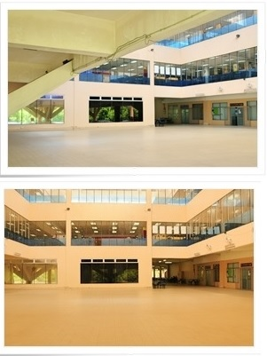

The open space Library square can be used as an exhibition area, religious or co-curriculum activities etc.
It is situated on the ground floor of the Library.
Usage application is restricted to activities organized by UMT only.
Usage is not permitted on Thursdays and Fridays unless the prior permission of the Chief Librarian has been granted.
Reservation can be made online. Please go to http://ppdsnz.umt.edu.my